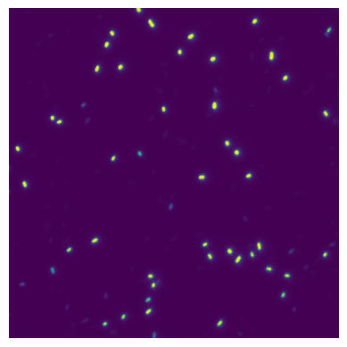
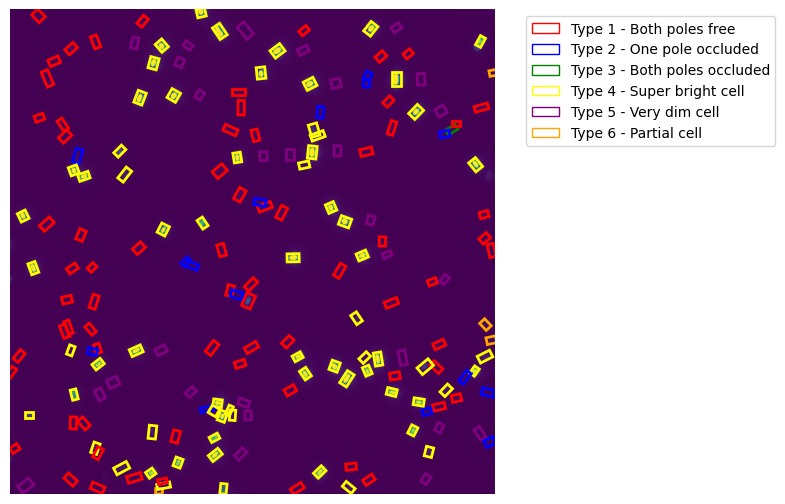
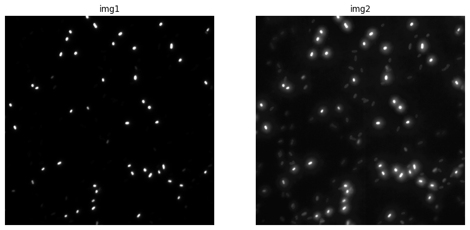

from minai import *core
Core utilities
Image processing
path = fc.Path.home()/'data/pili/training_data'
path.ls()(#18) [Path('/home/kappa/data/pili/training_data/200ms-0.4%-005.nd2'),Path('/home/kappa/data/pili/training_data/1hr01002.csv'),Path('/home/kappa/data/pili/training_data/0N01002.nd2'),Path('/home/kappa/data/pili/training_data/7.1- 003.nd2'),Path('/home/kappa/data/pili/training_data/0.1%.004.nd2'),Path('/home/kappa/data/pili/training_data/4hrs incu004.csv'),Path('/home/kappa/data/pili/training_data/1hr01002.nd2'),Path('/home/kappa/data/pili/training_data/200ms-0.4%-005.csv'),Path('/home/kappa/data/pili/training_data/dCpdA R1 FH 017.nd2'),Path('/home/kappa/data/pili/training_data/WT-A86C-LB-ice-002.csv'),Path('/home/kappa/data/pili/training_data/dCpdA R1 FH 017.csv'),Path('/home/kappa/data/pili/training_data/0N01002.csv'),Path('/home/kappa/data/pili/training_data/4hrs incu004.nd2'),Path('/home/kappa/data/pili/training_data/Chp B Replicate 2 200 MS060.csv'),Path('/home/kappa/data/pili/training_data/WT-A86C-LB-ice-002.nd2'),Path('/home/kappa/data/pili/training_data/7.1- 003.csv'),Path('/home/kappa/data/pili/training_data/Chp B Replicate 2 200 MS060.nd2'),Path('/home/kappa/data/pili/training_data/0.1%.004.csv')]get_im
get_im (x)
im = get_im(path/'0N01002.nd2')
show_image(im);
df = pd.read_csv(path/'0N01002.csv')TODO: make class_index 0-based.
calc_corners
calc_corners (csv, max_pos=8.458666666666666e-05)
y = calc_corners(path/'0N01002.csv')
y[:5]tensor([[1.0000, 0.1295, 0.9836, 0.1110, 0.9670, 0.1205, 0.9565, 0.1390, 0.9731],
[1.0000, 0.1901, 0.9989, 0.1651, 0.9883, 0.1706, 0.9752, 0.1957, 0.9859],
[1.0000, 0.1547, 0.8677, 0.1389, 0.8501, 0.1494, 0.8406, 0.1652, 0.8582],
[1.0000, 0.3313, 0.8914, 0.3377, 0.8674, 0.3514, 0.8710, 0.3450, 0.8950],
[6.0000, 0.3144, 0.9890, 0.3142, 0.9996, 0.3000, 0.9994, 0.3002, 0.9887]],
dtype=torch.float64)/opt/hostedtoolcache/Python/3.10.16/x64/lib/python3.10/site-packages/fastcore/docscrape.py:230: UserWarning: Unknown section Other Parameters
else: warn(msg)
/opt/hostedtoolcache/Python/3.10.16/x64/lib/python3.10/site-packages/fastcore/docscrape.py:230: UserWarning: Unknown section See Also
else: warn(msg)imshow_with_boxes
imshow_with_boxes (im, boxes, figsize=(8, 8), cmap=None, norm=None, aspect=None, interpolation=None, alpha=None, vmin=None, vmax=None, colorizer=None, origin=None, extent=None, interpolation_stage=None, filternorm=True, filterrad=4.0, resample=None, url=None, data=None)
| Type | Default | Details | |
|---|---|---|---|
| im | |||
| boxes | |||
| figsize | tuple | (8, 8) | |
| cmap | NoneType | None | The Colormap instance or registered colormap name used to map scalar data to colors. This parameter is ignored if X is RGB(A). |
| norm | NoneType | None | The normalization method used to scale scalar data to the [0, 1] range before mapping to colors using cmap. By default, a linear scaling is used, mapping the lowest value to 0 and the highest to 1. If given, this can be one of the following: - An instance of .Normalize or one of its subclasses(see :ref: colormapnorms).- A scale name, i.e. one of “linear”, “log”, “symlog”, “logit”, etc. For a list of available scales, call matplotlib.scale.get_scale_names().In that case, a suitable .Normalize subclass is dynamically generatedand instantiated. This parameter is ignored if X is RGB(A). |
| aspect | NoneType | None | The aspect ratio of the Axes. This parameter is particularly relevant for images since it determines whether data pixels are square. This parameter is a shortcut for explicitly calling .Axes.set_aspect. See there for further details.- ‘equal’: Ensures an aspect ratio of 1. Pixels will be square (unless pixel sizes are explicitly made non-square in data coordinates using extent). - ‘auto’: The Axes is kept fixed and the aspect is adjusted so that the data fit in the Axes. In general, this will result in non-square pixels. Normally, None (the default) means to use :rc: image.aspect. However, ifthe image uses a transform that does not contain the axes data transform, then None means to not modify the axes aspect at all (in that case, directly call .Axes.set_aspect if desired). |
| interpolation | NoneType | None | The interpolation method used. Supported values are ‘none’, ‘auto’, ‘nearest’, ‘bilinear’, ‘bicubic’, ‘spline16’, ‘spline36’, ‘hanning’, ‘hamming’, ‘hermite’, ‘kaiser’, ‘quadric’, ‘catrom’, ‘gaussian’, ‘bessel’, ‘mitchell’, ‘sinc’, ‘lanczos’, ‘blackman’. The data X is resampled to the pixel size of the image on the figure canvas, using the interpolation method to either up- or downsample the data. If interpolation is ‘none’, then for the ps, pdf, and svg backends no down- or upsampling occurs, and the image data is passed to the backend as a native image. Note that different ps, pdf, and svg viewers may display these raw pixels differently. On other backends, ‘none’ is the same as ‘nearest’. If interpolation is the default ‘auto’, then ‘nearest’ interpolation is used if the image is upsampled by more than a factor of three (i.e. the number of display pixels is at least three times the size of the data array). If the upsampling rate is smaller than 3, or the image is downsampled, then ‘hanning’ interpolation is used to act as an anti-aliasing filter, unless the image happens to be upsampled by exactly a factor of two or one. See :doc: /gallery/images_contours_and_fields/interpolation_methodsfor an overview of the supported interpolation methods, and :doc: /gallery/images_contours_and_fields/image_antialiasing fora discussion of image antialiasing. Some interpolation methods require an additional radius parameter, which can be set by filterrad. Additionally, the antigrain image resize filter is controlled by the parameter filternorm. |
| alpha | NoneType | None | The alpha blending value, between 0 (transparent) and 1 (opaque). If alpha is an array, the alpha blending values are applied pixel by pixel, and alpha must have the same shape as X. |
| vmin | NoneType | None | |
| vmax | NoneType | None | |
| colorizer | NoneType | None | The Colorizer object used to map color to data. If None, a Colorizer object is created from a norm and cmap. This parameter is ignored if X is RGB(A). |
| origin | NoneType | None | Place the [0, 0] index of the array in the upper left or lower left corner of the Axes. The convention (the default) ‘upper’ is typically used for matrices and images. Note that the vertical axis points upward for ‘lower’ but downward for ‘upper’. See the :ref: imshow_extent tutorial forexamples and a more detailed description. |
| extent | NoneType | None | The bounding box in data coordinates that the image will fill. These values may be unitful and match the units of the Axes. The image is stretched individually along x and y to fill the box. The default extent is determined by the following conditions. Pixels have unit size in data coordinates. Their centers are on integer coordinates, and their center coordinates range from 0 to columns-1 horizontally and from 0 to rows-1 vertically. Note that the direction of the vertical axis and thus the default values for top and bottom depend on origin: - For origin == 'upper' the default is(-0.5, numcols-0.5, numrows-0.5, -0.5).- For origin == 'lower' the default is(-0.5, numcols-0.5, -0.5, numrows-0.5).See the :ref: imshow_extent tutorial forexamples and a more detailed description. |
| interpolation_stage | NoneType | None | Supported values: - ‘data’: Interpolation is carried out on the data provided by the user This is useful if interpolating between pixels during upsampling. - ‘rgba’: The interpolation is carried out in RGBA-space after the color-mapping has been applied. This is useful if downsampling and combining pixels visually. - ‘auto’: Select a suitable interpolation stage automatically. This uses ‘rgba’ when downsampling, or upsampling at a rate less than 3, and ‘data’ when upsampling at a higher rate. See :doc: /gallery/images_contours_and_fields/image_antialiasing fora discussion of image antialiasing. |
| filternorm | bool | True | A parameter for the antigrain image resize filter (see the antigrain documentation). If filternorm is set, the filter normalizes integer values and corrects the rounding errors. It doesn’t do anything with the source floating point values, it corrects only integers according to the rule of 1.0 which means that any sum of pixel weights must be equal to 1.0. So, the filter function must produce a graph of the proper shape. |
| filterrad | float | 4.0 | The filter radius for filters that have a radius parameter, i.e. when interpolation is one of: ‘sinc’, ‘lanczos’ or ‘blackman’. |
| resample | NoneType | None | When True, use a full resampling method. When False, only resample when the output image is larger than the input image. |
| url | NoneType | None | Set the url of the created .AxesImage. See .Artist.set_url. |
| data | NoneType | None |
imshow_with_boxes(im, y)
CLAHE
Tackling low signal problem: Let’s take a look at an image with labels.
How CLAHE (Contrast Limited Adaptive Histogram Equalization) works:
- Basic Principle:
- Unlike regular histogram equalization which works on the entire image at once, CLAHE works on small regions (tiles) of the image
- This local approach helps maintain local details and contrast
- Step-by-Step Process:
- The image is divided into small tiles (defined by tile_grid_size)
- For each tile:
- A local histogram is computed
- The histogram is clipped at a predetermined value (clip_limit) to prevent noise amplification
- Histogram equalization is applied to that tile
- Bilinear interpolation is used to eliminate artificial boundaries between tiles
- Key Advantages:
- Better handling of local contrast
- Prevents over-amplification of noise (through clipping)
- Preserves edges and local details
- Works well with varying brightness levels in different image regions
- Parameters Impact:
- clip_limit: Higher values allow more contrast enhancement but may increase noise
- tile_grid_size: Smaller tiles give more local enhancement but might make the image look “patchy”
im.shape(1952, 1952)im.dtypedtype('uint16')apply_clahe
apply_clahe (image, clip_limit=2.0, tile_grid_size=(8, 8))
compare_ims
compare_ims (img1, img2)
enh = apply_clahe(im, clip_limit=10.1, tile_grid_size=(8,8))
compare_ims(im, enh)